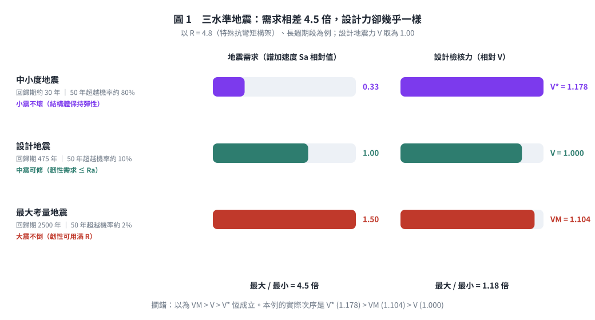
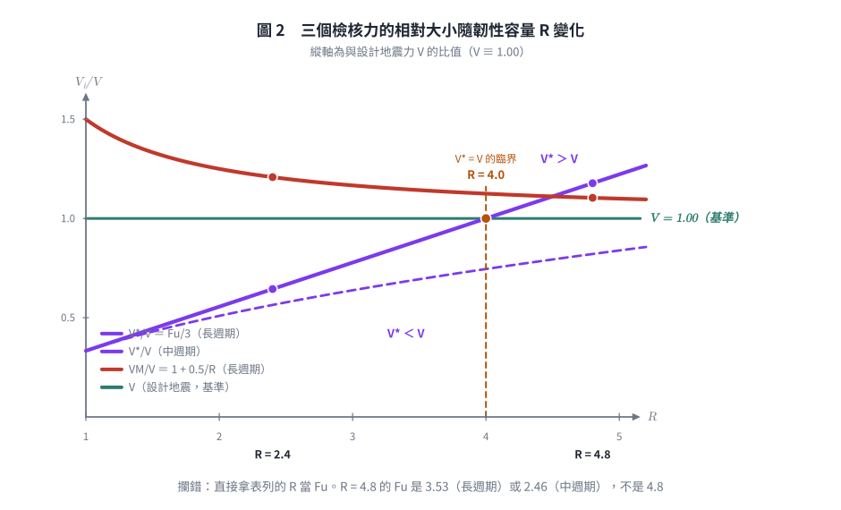
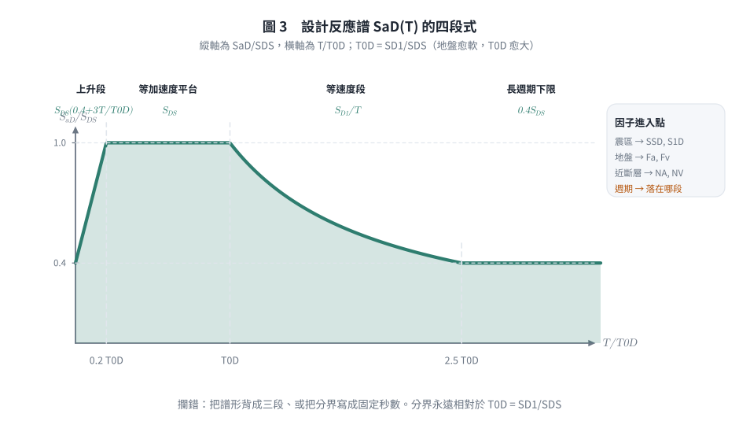
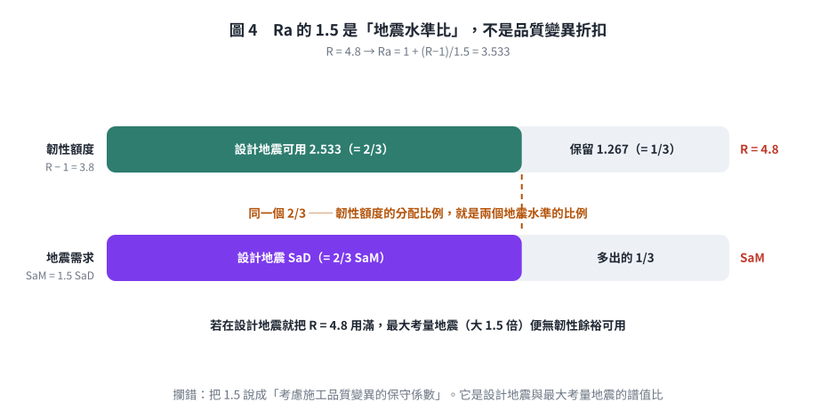

考題編號：SD-2020-4
主分類： SD-U2-2 建築耐震設計規範
副分類： SD-U2-1 地震力之設計規範
分析方法： 概念題（規範論述＋公式說明）
標籤： 三水準地震 設計地震 中小度地震 最大考量地震 年超越機率 回歸期 韌性折減係數 容許韌性容量 起始降伏地震力放大倍數 性能設計 小震不壞 中震可修 大震不倒 地震力計算邏輯 近斷層 工址地盤分類 設計反應譜 臺北盆地
1. 原始題目重述 (Problem Restatement)
台灣建築耐震規範規定三種地震：設計地震、中小度地震、最大考量地震。
規範公式：
$$V = \frac{I}{1.4\alpha_y}\left(\frac{S_{aD}}{F_u}\right)_m W \quad \text{（設計地震水平總橫力）}$$
$$V^* = \frac{IF_u}{4.2\alpha_y}\left(\frac{S_{aD}}{F_u}\right)_m W \quad \text{（中小地震水平總橫力）}$$
$$V_M = \frac{I}{1.4\alpha_y}\left(\frac{S_{aM}}{F_{uM}}\right)_m W \quad \text{（最大考量地震水平總橫力）}$$
問： 1.（10 分）50 年設計年限下，三種地震的年超越機率為何？其結構分別應達何種性能（破壞程度）？此規定的目的為何？這三個地震力的大小次序一定是 $V_M > V > V^*$ 嗎？為什麼？ 2.（15 分）震區、工址地盤種類、結構韌性、結構基本週期、近斷層如何在設計地震水平總橫力中被考慮？計算中小度地震有何差異處？（儘量以公式解釋說明，公式可以不完整，重點在說明計算上的邏輯）
註：本年考卷的 $V_M$ 式分母寫 $1.4\alpha_y$；2024 年同型題（SD-2024-3）寫 $1.4\alpha_{yM}$。 兩者僅差在最大考量地震是否另訂起始降伏放大倍數，比較 $V_M/V$ 時可令 $\alpha_{yM} = \alpha_y$。
2. 考題核心精神與出題者意圖 (Core Concepts & Examiner's Intent)
核心觀念： - 理解三水準地震設計的機率基礎（回歸期與超越機率換算） - 理解各影響因子在公式中的對應位置 - 辨識 $V^* > V$ 的反直覺現象（高韌性結構）
出題重點： 最刁鑽的部分是 $V_M > V > V^$ 不一定成立——由 $V^/V = F_u/3$，當 $F_u > 3$ 時 $V^* > V$，考生容易誤以為中小地震力一定最小。另一半（$V_M$ 與 $V$ 的差距其實很小）則幾乎沒人答得出來。
3. 解題戰略地圖與陷阱分析 (Strategic Roadmap & Trap Analysis)
三大陷阱：
| # | 陷阱 | 正確處理 |
|---|---|---|
| 1 | 誤以為「中小地震力最小」 | $V^/V = F_u/3$，$F_u > 3$ 時 $V^ > V$（需 $R_a>3$，即高韌性系統落在長週期段） |
| 2 | 把 $F_u$ 與規範表列的 $R$ 混為一談 | $R \to R_a = 1+\frac{R-1}{1.5} \to F_u$（依週期段取 $R_a$ 或 $\sqrt{2R_a-1}$）；$R=4.8$ 對應的 $F_u$ 是 3.53 或 2.46，不是 4.8 |
| 3 | 超越機率與年超越機率混淆 | 題目問「年超越機率」→ 由回歸期取倒數，或由 50 年超越機率換算 |
| 4 | $\alpha_y$ 的物理意義搞反 | $\alpha_y$ = 起始降伏地震力放大倍數，$\ge 1$（RC 極限設計 1.5、鋼構極限設計 1.0、鋼構容許應力 1.2），不是 $\le 1$ 的折減係數 |
| 5 | 把中小度地震回歸期背成 72 年 | 72 年（50%/50yr）是美國 ASCE 41 的 frequent 水準；我國規範是回歸期約 30 年（50 年超越機率約 80%） |
3.5 變數層次分析 (Variable Hierarchy Analysis)
關鍵符號說明
| 符號 | 意義 | 影響因子 |
|---|---|---|
| $I$ | 用途係數 | 建築用途（一般 1.0；重要 1.25；緊急救災 1.5） |
| $S_{aD}$ | 設計地震水平譜加速度係數 | 震區（$S_S^D, S_1^D$）＋地盤種類＋週期＋近斷層 |
| $S_{aM}$ | 最大考量地震水平譜加速度係數 | 同上；因 $S_{DS}=\frac{2}{3}S_{MS}$，一般 $S_{aM} = 1.5\,S_{aD}$ |
| $R$ | 結構系統韌性容量（規範表 1-3） | 特殊抗彎矩構架 4.8；一般構架較低 |
| $R_a$ | 容許韌性容量 | $R_a = 1+\dfrac{R-1}{1.5}$（設計地震只准用 $R$ 的 2/3） |
| $F_u$ | 結構系統地震力折減係數 | 長週期 $F_u = R_a$；中週期 $F_u = \sqrt{2R_a-1}$；$T\to0$ 時 $\to 1.0$ |
| $F_{uM}$ | 最大考量地震之折減係數 | 以韌性容量 $R$（而非 $R_a$）計算，故 $F_{uM} \ge F_u$ |
| $\alpha_y$ | 起始降伏地震力放大倍數（$\ge 1$） | RC 極限強度設計 1.5；鋼構極限設計 1.0；鋼構容許應力設計 1.2 |
| 1.4 | 系統超強倍數 | 首根構件降伏（$P_y$）→ 全面塑化（$P_u = 1.4P_y$） |
| $(\;)_m$ | 規範 2.2 之修正值，非「最大值」 | 見 §4(二)6 的分段式 |
| $W$ | 建築物全部靜載重 | （必要時含部分活載重） |
4. 步驟化詳細解答
(一) 三種地震的年超越機率、性能目標與大小次序
1. 年超越機率（50年設計年限）
設 50 年超越機率為 $P_{50}$，年超越機率為 $P_a$，關係為：
$$P_{50} = 1 - (1 - P_a)^{50} \approx 50 P_a \quad \text{（小機率近似）}$$
精確換算：$P_a = 1 - (1 - P_{50})^{1/50}$
依我國《建築物耐震設計規範及解說》1.2 節：
| 地震種類 | 回歸期 $T_R$ | 50 年超越機率 | 年超越機率 $P_a \approx 1/T_R$ |
|---|---|---|---|
| 中小度地震 | 約 30 年 | 約 80% | $1/30 \approx 3.3\%$／年 |
| 設計地震 | 475 年 | 約 10% | $1/475 \approx 0.21\%$／年 |
| 最大考量地震 | 2500 年 | 約 2% | $1/2500 \approx 0.04\%$／年 |
（換算驗證：設計地震 $P_a = 1-0.90^{1/50} = 0.00211 \Rightarrow T_R = 474$ 年 ✓； 中小度地震 $P_{50} = 1-(1-\frac{1}{30})^{50} = 1-0.966\overline{6}^{50} = 1-0.183 = 81.7\% \approx 80\%$ ✓）
⚠ 不要寫成 72 年／50%。 「50%/50yr → 72 年」是美國 ASCE 41 既有建築評估的 frequent earthquake 水準；我國建築耐震規範的中小度地震明定為回歸期約 30 年， 相當於一棟建築在 50 年使用年限中「大概會遇到一兩次」的地震。 中小度地震設計力公式的分母 4.2 ＝ $1.4 \times 3$，那個 3 就是 「設計地震譜值 ÷ 中小度地震譜值 ≈ 3」，與 30 年 vs 475 年的危害度比相符。
2. 各地震對應性能目標
| 地震種類 | 規範原文的性能要求 | 對應性能等級 | 白話 |
|---|---|---|---|
| 中小度地震（30 年回歸） | 結構體保持在彈性限度內 | 立即使用（IO） | 小震不壞 |
| 設計地震（475 年回歸） | 容許產生塑性變形，但韌性需求不得超過容許韌性容量 $R_a$ | 生命安全（LS） | 中震可修 |
| 最大考量地震（2500 年回歸） | 韌性可用滿至 $R$，但不得崩塌 | 防止崩塌（CP） | 大震不倒 |
三列的第二欄正是 $R_a = 1+\frac{R-1}{1.5}$ 的來源：設計地震只准用掉韌性額度的 2/3， 剩下 1/3 留給最大考量地震。三個水準不是三條獨立規定，而是同一份韌性額度的分配方案。
3. 規定目的
三水準地震設計的目的是以機率為基礎、以性能為導向的耐震設計策略：
$$\text{（頻繁小震）立即使用} \subset \text{（設計地震）生命安全} \subset \text{（罕見大震）防止崩潰}$$
- 經濟理由： 頻繁發生的中小地震不應造成損失（避免維修成本）
- 生命安全： 475年回歸的設計地震（結構設計的主要依據）保障人命
- 最低底線： 2475年罕見極大地震至少不倒塌（社會安全底線）

圖 1 左右兩欄一比就看出本題的關鍵：地震需求相差 4.5 倍，三個設計檢核力卻只差 1.18 倍。它攔的是把回歸期差距直接想像成設計力差距的直覺。
4. $V_M > V > V^*$ 不一定成立
比較 $V^*$ 與 $V$：
$$\frac{V^*}{V} = \frac{IF_u/(4.2\alpha_y) \cdot (S_{aD}/F_u)m W}{I/(1.4\alpha_y) \cdot (S$$}/F_u)_m W} = \frac{F_u}{4.2/1.4} = \frac{F_u}{3
$$\therefore V^* = \frac{F_u}{3} V$$
臨界條件是 $F_u = 3$，但 $F_u$ 要從 $R$ 一路算下來，不能直接拿表列的 $R$ 當 $F_u$：
$$R \;\longrightarrow\; R_a = 1+\frac{R-1}{1.5} \;\longrightarrow\; F_u = \begin{cases} R_a & (\text{長週期}) \ \sqrt{2R_a-1} & (\text{中週期}) \end{cases}$$
| 韌性容量 $R$ | $R_a$ | $F_u$（長週期） | $V^*/V$ | $F_u$（中週期） | $V^*/V$ |
|---|---|---|---|---|---|
| 4.8（特殊抗彎矩構架） | 3.533 | 3.53 | 1.18 → $V^*>V$ | 2.46 | 0.82 |
| 4.0（臨界值） | 3.000 | 3.00 | 1.00 → 恰相等 | 2.24 | 0.75 |
| 3.2 | 2.467 | 2.47 | 0.82 | 1.98 | 0.66 |
| 1.5（低韌性） | 1.333 | 1.33 | 0.44 | 1.29 | 0.43 |
$$\boxed{V_M > V > V^\ \text{不一定成立：長週期且 } R > 4.0\ (\Leftrightarrow R_a>3 \Leftrightarrow F_u>3)\ \text{時，} V^ > V}$$
中週期段幾乎不可能翻轉： $F_u = \sqrt{2R_a-1} > 3$ 需 $R_a > 5$，即 $R > 7$，已超出規範表列的最大韌性容量， 故只有落在長週期段的高韌性結構才會出現 $V^* > V$。
工程意涵： 高韌性設計把設計地震力除以 $F_u$ 大幅折減，但中小度地震要求結構保持彈性、 $F_u$ 在 $V^*$ 式中被消去，折減只剩固定的 $1/3$。因此愈韌性的結構，中小度地震檢核愈可能反過來控制設計。 這正是規範防止「紙面上高韌性、實際勁度與強度不足」的機制——韌性不能拿來換小震下的可見損壞。
比較 $V_M$ 與 $V$（這一半更少人答對）：
$$\frac{V_M}{V} = \frac{\alpha_y}{\alpha_{yM}}\cdot\frac{(S_{aM}/F_{uM})m}{(S$$}/F_u)_m
兩個關鍵事實：
- $S_{DS} = \frac{2}{3}S_{MS}$、$S_{D1} = \frac{2}{3}S_{M1}$ $\Rightarrow$ $S_{aM} = 1.5\,S_{aD}$（分子只放大 1.5 倍，不是回歸期比 2500/475 那麼多）
- $F_{uM}$ 是以韌性容量 $R$ 計算，$F_u$ 是以容許韌性容量 $R_a$ 計算 $\Rightarrow$ $F_{uM} > F_u$（分母也放大）
令 $\alpha_{yM} = \alpha_y$，長週期段（$F_u = R_a$、$F_{uM} = R$）可得一個很漂亮的閉合式：
$$\frac{V_M}{V} = 1.5\cdot\frac{R_a}{R} = \frac{1.5}{R}\left(1+\frac{R-1}{1.5}\right) = \boxed{1 + \frac{0.5}{R}}$$
| $R$ | 1.0 | 2.0 | 3.2 | 4.8 |
|---|---|---|---|---|
| $V_M/V$（長週期） | 1.50 | 1.25 | 1.16 | 1.10 |
結論：$V_M > V$ 恆成立，但餘裕遠比想像小——高韌性結構只有約 10%。 原因就是最大考量地震「多出來的 1.5 倍需求」，幾乎全部由「多准用的那 1/3 韌性額度」抵銷掉了。 這也再次印證 $R_a$ 的 1.5 折扣與 $S_{aM}/S_{aD} = 1.5$ 是同一件事的一體兩面。

圖 2 $V^/V$ 與 $V_M/V$ 隨 $R$ 的變化。$R = 4.0$（$\Leftrightarrow R_a = 3 \Leftrightarrow F_u = 3$）是 $V^ = V$ 的臨界。它攔的是直接拿表列的 $R$ 當 $F_u$ 代入——$R = 4.8$ 對應的 $F_u$ 是 3.53 或 2.46，差別足以讓結論翻面。
(二) 各因子如何在設計地震水平總橫力中被考慮
以設計地震公式展開說明：
$$V = \underbrace{\frac{I}{1.4\alpha_y}}{\text{用途 ÷ 系統超強}} \times \underbrace{\left(\frac{S\right)}}{F_um} \times W$$}
五個因子的進入點一目了然：前三個（震區、地盤、週期、近斷層）全部走 $S_{aD}$ 這條路，韌性走 $F_u$ 這條路。
$$\underbrace{S_S^D,\;S_1^D}{\text{震區（微分區表）}} \xrightarrow{\;\times N_A,\,N_V\;(\text{近斷層})\;} \xrightarrow{\;\times F_a,\,F_v\;(\text{地盤種類})\;} S(T)$$},\;S_{D1} \xrightarrow{\;\text{譜形}\;+\;T\;} S_{aD
1. 震區 → 進入 $S_S^D$、$S_1^D$
規範不用單一「震區係數」，而是直接由鄉鎮市區微分區表查出工址的 短週期水平譜加速度係數 $S_S^D$ 與一秒週期水平譜加速度係數 $S_1^D$（對應 475 年回歸期的一致危害度譜）。 花蓮、宜蘭、嘉南等高危害度地區數值明顯大於澎湖、金馬。 臺北盆地另有臺北一區～三區的專屬規定。
2. 工址地盤種類 → 進入放大係數 $F_a$、$F_v$
規範依地表下 30 m 平均剪力波速 $V_{S30}$ 分為三類地盤（不是四類）：
| 地盤 | 判準 | 譜形影響 |
|---|---|---|
| 第一類（堅實） | $V_{S30} \ge 270$ m/s | $F_a$、$F_v$ 最小 |
| 第二類（普通） | $180 \le V_{S30} < 270$ m/s | 中等 |
| 第三類（軟弱） | $V_{S30} < 180$ m/s | $F_v$ 顯著放大長週期 |
$$S_{DS} = F_a \cdot S_S^D \;,\qquad S_{D1} = F_v \cdot S_1^D$$
軟弱地盤的 $F_v$ 遠大於 $F_a$，等於把 $T_0^D = S_{D1}/S_{DS}$ 往右推——譜的平台段變長， 中長週期建築的 $S_{aD}$ 被顯著抬高。這就是地盤種類「改變譜形而不只是縮放幅值」的機制。
3. 結構基本週期 → 進入設計反應譜的四段式
$$S_{aD}(T) = \begin{cases} S_{DS}\left(0.4 + 3\dfrac{T}{T_0^D}\right) & 0 \le T < 0.2T_0^D \quad(\text{上升段，}T{=}0\text{ 時 }0.4S_{DS})\[6pt] S_{DS} & 0.2T_0^D \le T \le T_0^D \quad(\text{等加速度平台})\[6pt] \dfrac{S_{D1}}{T} & T_0^D < T \le 2.5\,T_0^D \quad(\text{等速度段})\[6pt] 0.4\,S_{DS} & T > 2.5\,T_0^D \quad(\text{長週期下限}) \end{cases}$$
$$T_0^D = \frac{S_{D1}}{S_{DS}}$$
週期同時決定兩件事：$S_{aD}$ 落在哪一段，以及 $F_u$ 取 $R_a$ 還是 $\sqrt{2R_a-1}$（分界同樣是 $T_0^D$）。 所以週期是唯一同時出現在分子與分母的因子。
4. 結構韌性 → 進入 $F_u$（三段換算，不可跳步）
$$R\;(\text{規範表 1-3}) \;\to\; R_a = 1+\frac{R-1}{1.5} \;\to\; F_u = \begin{cases} R_a & T \ge T_0^D \ \text{內插} & 0.6T_0^D < T < T_0^D \ \sqrt{2R_a-1} & 0.2T_0^D \le T \le 0.6T_0^D \ \text{內插至 }1.0 & T \to 0 \end{cases}$$
| 系統 | $R$ | $R_a$ | $F_u$（長週期） | $F_u$（中週期） |
|---|---|---|---|---|
| 特殊抗彎矩構架（RC／鋼／SRC） | 4.8 | 3.53 | 3.53 | 2.46 |
| 中等韌性系統 | 3.2 | 2.47 | 2.47 | 1.98 |
| 低韌性／無韌性細部 | 1.5 | 1.33 | 1.33 | 1.29 |
⚠ 表中 4.8、3.2、1.5 是韌性容量 $R$，不是 $F_u$。直接把 4.8 當 $F_u$ 代入， 設計地震力會少算約 26%（$4.8$ vs $3.53$）。
韌性另外還透過 $\alpha_y$（起始降伏地震力放大倍數，$\ge 1$）與 1.4（系統超強）進入分母， 但這兩者反映的是超強而非韌性，物理意義不同，不可混為一談。
5. 近斷層 → 進入 $N_A$、$N_V$
工址位於規範指定的活動斷層近域時，先以近斷層調整因子放大震區參數：
$$S_S^D \leftarrow N_A \cdot S_S^D \;,\qquad S_1^D \leftarrow N_V \cdot S_1^D$$
$N_A$（短週期）與 $N_V$（長週期）依斷層類別與工址至斷層的距離查表，距離愈近愈大，超過一定距離即為 1.0。 其物理背景是近斷層的向前方向性效應與滑衝效應會產生長週期大速度脈衝， $N_V > N_A$ 反映此脈衝主要放大長週期段。

圖 3 $S_{aD}(T)$ 的四段式與各因子的進入點。它攔的是把譜形背成三段、或把分界寫成固定秒數——分界永遠相對於 $T_0^D = S_{D1}/S_{DS}$，隨地盤與震區而變。
6. 中小度地震的差異
$$V^* = \frac{I F_u}{4.2\,\alpha_y}\left(\frac{S_{aD}}{F_u}\right)_m W$$
| 對比項目 | 設計地震 $V$ | 中小度地震 $V^*$ | 差異說明 |
|---|---|---|---|
| 分母係數 | 1.4 | 4.2（一般工址與近斷層）／3.5（臺北盆地） | $4.2 = 1.4\times3$、$3.5 = 1.4\times2.5$，那個 3（或 2.5）就是設計地震與中小度地震的譜值比 |
| $F_u$ 的角色 | 只在分母（折減設計力） | 分子多一個 $F_u$，與分母的 $F_u$ 相消 | 中小度地震不折減韌性 |
| 性能要求 | 容許降伏，韌性需求 $\le R_a$ | 結構體保持在彈性限度內 | 中小度地震的韌性需求為零 |
| 對 $F_u$ 的敏感度 | $V \propto 1/F_u$ | 與 $F_u$ 無關 | 韌性愈高，$V^*/V = F_u/3$ 愈大 |
| 地盤／震區／週期／近斷層 | 全部透過 $S_{aD}$ 進入 | 完全相同，沿用同一條 $S_{aD}$ | 只有分母的常數不同 |
為什麼臺北盆地是 3.5 不是 4.2： 臺北盆地的深厚沖積層對中小度地震的放大比對設計地震更明顯， 兩個水準的譜值比只有約 2.5（而非一般工址的 3），故分母較小、$V^*$ 相對更大。
兩點常被寫錯的細節：
- $F_u$ 並非乾淨地消去。 嚴格來說 $\left(\frac{S_{aD}}{F_u}\right)m \ne \frac{S$， 只有當 $S_{aD}/F_u \le 0.3$（落在修正式的第一段）時才有 $V^* = \frac{I\,S_{aD}}{4.2\,\alpha_y}W$ 這個乾淨形式。}}{F_u
- 下標 $m$ 不是「取最大值」，是規範 2.2 的修正值，其分段式為：
$$\left(\frac{S_{aD}}{F_u}\right)m = \begin{cases} \dfrac{S \le 0.3 \[8pt] 0.52\dfrac{S_{aD}}{F_u} + 0.144 & 0.3 < \dfrac{S_{aD}}{F_u} < 0.8 \[8pt] 0.70\dfrac{S_{aD}}{F_u} & \dfrac{S_{aD}}{F_u} \ge 0.8 \end{cases}$$}}{F_u} & \dfrac{S_{aD}}{F_u
（在兩個分界點皆連續：$0.3 \to 0.30$、$0.8 \to 0.56$。） 其物理意義是：當 $S_{aD}/F_u$ 較大，代表結構被要求進入較深的非彈性變形， 遲滯消能使等效阻尼比高於 5%，故可在 5% 阻尼反應譜的基礎上再作折減。 $V$、$V^$、$V_M$ 三式都用同一個修正，所以 $V^/V = F_u/3$ 的比值不受影響。
核心差異一句話： 中小度地震要求結構保持彈性，故不得動用韌性折減（$F_u$ 相消）； 分母由 $1.4$ 改為 $4.2$（臺北盆地 $3.5$），反映中小度地震（回歸期 30 年）的譜值約為設計地震（475 年）的 $1/3$（臺北盆地 $1/2.5$）。
5. 關鍵爭議點與進階探討 (Critical Issues & Advanced Discussion)
為何高韌性結構反而可能有較高的中小度地震檢核力？
以特殊抗彎矩構架（$R = 4.8 \Rightarrow R_a = 3.53$）且落在長週期段（$F_u = R_a = 3.53$）為例：
$$V^* = \frac{F_u}{3} V = \frac{3.53}{3} V = 1.18\,V$$
設計地震力因韌性被除以 3.53，但中小度地震不使用韌性、折減固定為 $1/3$，於是 $V^$ 反過來控制設計。 若同一棟結構落在中週期段（$F_u = 2.46$），則 $V^ = 0.82V$，仍由設計地震控制。 同一棟樓、同樣的韌性細部，只因基本週期落在譜的哪一段，控制的地震水準就會換人——這是本題最值得帶走的一句。
這正是規範的用意：防止工程師設計「紙面上高韌性、實際上剛性不足」的結構——即使詳述高韌性細部，結構在小震下仍需有足夠的彈性強度，不依賴反覆降伏的耗能能力。

圖 4 $R_a$ 的 1.5 是「地震水準比」而非品質變異折扣。上下兩條長條的分割比例完全相同——這就是 $R_a = 1+\frac{R-1}{1.5}$ 與 $S_{DS} = \frac{2}{3}S_{MS}$ 是同一件事的視覺證明。
進階補充：三水準的關係
$$\underbrace{V_M}{\text{大震不倒}} \;\underbrace{>}} \;\underbrace{V{\text{中震可修}} \;\underbrace{\gtrless}$$} \;\underbrace{V^*}_{\text{小震不壞}
三個地震力代表三個性能水準的強度需求，設計時三者皆須檢核、取最大值控制。 值得注意的是三者的間距都不大：$V_M$ 只比 $V$ 大 $0.5/R$（高韌性時僅 10%）， $V^$ 甚至可能超過 $V$。「地震愈大、設計力愈大」的直覺在這三式中並不可靠*， 因為每一式的分母都同時被該水準所容許的韌性程度調整過——這正是本題想考的性能設計核心。
答題提醒： 若考場上一時算不出 $1+0.5/R$，至少要寫出 「$S_{aM} = 1.5S_{aD}$，但 $F_{uM}$ 以 $R$ 計算而 $F_u$ 以 $R_a$ 計算，兩者部分抵銷，故 $V_M$ 只略大於 $V$」， 即可拿到本小題的關鍵分。
圖解補繪：2026-09-02（向量圖，由 gen_SD-2020-4.py 產生，可重跑；SVG 供 wiki／PDF，2× PNG 供簡報與影片管線）